Camera trap merupakan kamera yang memiliki sensor panas atau gerakan sehingga dapat menghasilkan foto secara otomatis. Penggunaan camera trap untuk survei dan pemantauan satwa liar semakin meningkat dalam beberapa tahun belakangan ini. Hal ini karena camera trap dapat mendeteksi satwa elusif di habitatnya secara nonintrusif, dapat aktif selama beberapa bulan di lapangan sehingga manghasilkan survey effort yang lebih tinggi daripada pengamatan langsung oleh manusia, dan dapat menyimpan informasi spasial (berupa koordinat temuan) dan temporal (tanggal dan jam temuan) rekaman keberadaan satwa.
Penggunaan camera trap tidak hanya menghasilkan rekaman satwa target, melainkan juga satwa lain yang berbagi habitat dengan satwa target tersebut. Karena data yang dihasilkan sangat banyak, pengelolaan dan analisis hasil camera trap cukup rumit, tetapi juga berpotensi menghasilkan banyak penelitian, terutama terkait ekologi spesies yang jarang dipelajari.
Untuk mendukung peningkatan kapasitas peneliti dan praktisi konservasi mengenai pengelolaan dan analisis data camera trap, Wildlife Conservation Society-Indonesia Program menyusun modul pelatihan ini. Modul ini disusun dengan maksud sebagai pelengkap pelatihan tatap muka bagi staf UPT. Agar dapat digunakan oleh pihak lain juga, kami membuat versi untuk pengguna umum di mana data yang digunakan bukan data survei camera trap yang sebenarnya. Data praktik dapat diunduh melalui tautan berikut: https://bit.ly/modulCT.
Modul ini secara khusus berisi tentang penggunaan bahasa pemrograman R untuk menganalisis data camera trap. R adalah sebuah bahasa pemrograman untuk melakukan komputasi dan membuat grafik. Dibandingkan bahasa pemrograman lain, R memiliki banyak package (kumpulan fungsi tambahan) yang dibuat khusus untuk studi ekologi sehingga R sering digunakan oleh peneliti dan praktisi ekologi dan konservasi.
R memiliki jenis antarmuka pengguna yang disebut command-line interface (CLI), yaitu sistem antarmuka yang memproses perintah kepada program komputer dalam bentuk baris-baris teks. Antarmuka pengguna yang biasanya familiar dengan kita adalah graphical user interface (GUI), yaitu sistem antarmuka di mana pengguna komputer berinteraksi dengan program komputer melalui gambar ikon, misalnya kita mengklik gambar disket untuk menyimpan dokumen di Microsoft Word. Untuk pemula, program komputer GUI mungkin lebih mudah dipelajari dibandingkan CLI, tetapi untuk jangka panjang, CLI lebih praktis dan efisien. Perintah pada program yang menggunakan CLI dapat disimpan dalam bentuk script sehingga langkah-langkah pengolahan dan analisis dapat terdokumentasikan dengan baik dan dapat diulang kembali (repeatable) atau dimodifikasi untuk penggunaan data/studi lain (reproducible). Script juga dapat dibagikan (shareable) sehingga bisa digunakan oleh orang lain dengan mudah.
Script R pada modul ini ditunjukkan oleh teks dengan warna latar belakang abu-abu dan dapat langsung di-copy dan paste pada R kalian. Hasil perintah R (jika ada keluaran) akan tampak di bawah perintah, bisa berupa grafik atau teks bertipe font monospace seperti ini. R dapat diunduh dari tautan https://www.r-project.org. Selain itu, disarankan juga mengunduh RStudio https://www.rstudio.com, yaitu aplikasi tambahan yang dapat mempermudah manajemen script dan working directory; meng-highlight komponen berbeda dalam perintah sehingga mudah dimengerti; dan mengintegrasikan plot, help page, dan komponen lain dalam satu jendela RStudio. “Mesin” yang melakukan komputasi adalah R, sedangkan RStudio hanya tampilan antarmuka pengguna tambahan saja. Oleh karena itu, kita perlu mengunduh dan memasang keduanya.
Modul ini tidak memuat tutorial dasar R karena sudah banyak sumber yang tersedia secara gratis terkait hal tersebut, misalnya https://bookdown.org/aepstk/intror yang menyediakan pengantar R dalam bahasa Indonesia. Selain R, kita akan menggunakan perangkat lunak Picture Information Extractor (PIE) untuk me-rename dan menghasilkan spreadsheet metadata foto. PIE dapat diunduh dari https://pie-picture-information-extractor.en.softonic.com/.
Data camera trap terdiri dari tiga komponen utama, yaitu data pemasangan kamera, foto atau video hasil survei, dan data identifikasi rekaman kamera.
Data pemasangan kamera adalah data berupa spreadsheet yang memuat informasi mengenai pemasangan dan pengambilan kamera. Data ini selanjutnya akan disebut sebagai data Deployment. Informasi yang wajib ada dalam data pemasangan kamera adalah:
Foto atau video hasil survei
Data ini merupakan kumpulan foto atau video yang dihasilkan dari pemasangan camera trap. Data disimpan dalam folder yang dinamakan sesuai dengan ID lokasi kamera. Jika dua kamera dipasang di satu lokasi, di dalam folder ID lokasi perlu ditambahkan folder ID kamera atau folder dinamakan ID kamera saja tanpa folder ID lokasi.
Data identifikasi rekaman kamera
Data ini berupa spreadsheet yang berisi informasi identifikasi temuan kamera, selanjutnya disebut sebagai data Images. Spreadsheet wajib berisi informasi berikut:
Hubungan tiap komponen diperlihatkan dalam bagan berikut. Variabel yang menjadi penghubung antarkomponen ini penting. Kesalahan pengetikan (typo) atau data yang tidak lengkap akan membuat analisis lebih rumit.
Komponen data camera trap
Cara Manual
Data identifikasi temuan kamera diidentifikasi dan dientri ke dalam spreadsheet secara manual. Perangkat lunak yang dapat digunakan adalah Microsoft Excel (paling umum) atau Microsoft Access.
Cara Otomatis
Otomatis merujuk pada “cara menghasilkan spreadsheet”, bukan proses identifikasi spesies dari foto/video. Saat ini, sudah mulai dikembangkan machine learning software untuk mengidentifikasi satwa dari foto camera trap (misalnya di Afrika Selatan http://www.wildid.app/), tetapi belum ada yang dapat mengidentifikasi satwa di hutan hujan tropis karena sebagian besar foto buram dan latar belakang hutan menyulitkan identifikasi. Berikut ini dipaparkan secara singkat beberapa perangkat lunak yang dapat menghasilkan spreadsheet identifikasi secara otomatis.
Renamer, foto dalam hierarki folder tersebut di-rename dengan format tanggal dan jam. Kemudian, spreadsheet rekaman dalam format .txt dibuat secara otomatis dengan aplikasi DataOrganize. Aplikasi-aplikasi tersebut terdapat dalam satu paket sistem Camera Sweet.Hierarki folder. (Sumber: Presentasi Jim Sanderson)
Interface Wild.ID
camtrapR merupakan sebuah package R untuk memproses dan menganalisis data camera trap. Proses identifikasi satwa dari foto dilakukan sebelum memproses data menggunakan R melalui dua cara yaitu (1) meng-assign identifikasi spesies sebagai metadata tagging foto atau (2) seperti Camera Sweet, spesies difolderkan dalam subdirektori folder lokasi. camtrapR kemudian akan membaca metadata tagging atau subdirektori nama spesies dan menghasilkan spreadsheet rekaman foto.camtrapR tetap dapat dipakai, misalnya fungsi membuat matriks deteksi untuk pemodelan okupansi atau membuat peta temuan spesies.Hingga pada waktu modul ini ditulis, WCS-IP lanskap Sumatera bagian Selatan masih menggunakan sistem entri data camera trap secara manual menggunakan Microsoft Excel. Hal ini dilakukan karena sistem otomatisasi hanya memungkinkan identifikasi nama spesies dan jumlah individu dan belum bisa menambahkan informasi lain, misalnya jenis kelamin dan kelas usia satwa.
Dengan menggunakan sistem metadata tagging seperti camtrapR, sebenarnya kita bisa menambahkan informasi tersebut sebagai tag, tetapi tag foto dalam metadata akan dimasukkan dalam satu kolom di dalam spreadsheet yang dihasilkan camtrapR. Hal ini akan menyulitkan perapihan data jika urutan tag tidak sama (species|age|sex vs. species|sex|age) atau ada data yang kosong (species|age|sex dan species|sex).
Metode mana pun yang dipakai tidak menjadi masalah asalkan kita dapat meminimalisasi kemungkinan terjadinya kesalahan entri data serta dapat menghasilkan spreadsheet berisi data Deployment dan data Images.
Berikut adalah tahap-tahap pengelolaan data camera trap secara manual setelah dilakukan survei di lapangan.
| Location ID | Camera | X | Y | Camera Deployment Begin Date | Camera Deployment End Date | Camera last picture date |
|---|---|---|---|---|---|---|
| IDN-108-L0001 | A | 103341 | 9867882 | 2019-06-28 | 2019-11-15 | 2019-11-15 |
| IDN-108-L0001 | B | 103341 | 9867882 | 2019-06-28 | 2019-11-15 | NA |
| IDN-108-L0002 | A | 199767 | 9844289 | 2019-06-28 | 2019-11-15 | 2019-11-15 |
| IDN-108-L0002 | B | 199767 | 9844289 | 2019-06-28 | 2019-11-15 | 2019-11-15 |
| IDN-108-L0003 | A | 225412 | 9864805 | 2019-06-29 | 2019-11-16 | NA |
| IDN-108-L0003 | B | 225412 | 9864805 | 2019-06-29 | 2019-11-16 | 2019-11-16 |
Memfolderkan foto/video hasil rekaman kamera
Setelah kamera diambil dari lapangan, foto-foto (atau video) hasil survei segera disimpan dalam folder yang dinamakan sesuai dengan ID lokasi di data Deployment.
Mengubah nama foto (rename)
Tahap ini tidak wajib dilakukan, tetapi penamaan ulang foto akan mempermudah pencarian foto. Cara untuk mengubah nama foto menggunakan Picture Information Extractor (PIE):
Memindahkan metadata foto ke dalam spreadsheet Image
Untuk membuat data Images, kita membutuhkan kolom nama foto dan tanggal-jam. Tentu akan memakan banyak waktu jika kita mengentri data tersebut satu per satu sehingga kita membutuhkan bantuan aplikasi untuk mengekstrak data yang kita butuhkan. Cara untuk mengekspor metadata menggunakan PIE adalah:
Name ke kolom Image Id pada spreadsheet ImageDate Taken ke kolom Date_Time Captured Contoh spreadsheet Image yang sudah diisi informasi dari metadata foto:Mengidentifikasi temuan kamera
Kolom di data Images yang diisi pada tahap identifikasi adalah:
Photo Type:
Set up: foto tim saat pemasangan kameraEnd: foto tim saat pengambilan kameraBlank: foto kosongAnimal: foto satwaStaff: foto tim lapangan selain saat pemasangan atau pengambilan kameraUnknown: foto satwa yang belum dapat diidentifikasi hingga tingkat spesiesUnidentifiable: foto satwa yang tidak dapat diidentifikasi, misalnya hanya telinga atau hanya ujung ekorGenus Species: Kolom ini diisi dengan nama spesies yang terekam dalam fotoAge: Kategori usia satwa, Adult, Subadult, Juvenile, atau Infant. Jika terdapat lebih dari satu individu dalam kategori satwa yang berbeda, kategori usia dipisahkan dengan titik koma atau tanda lain asalkan konsisten untuk seluruh dataset. Contoh Adult;Juvenile. Jika tidak diketahui, diisi dengan UnknownSex: Kategori jenis kelamin: Female, Male, UnknownCount: Jumlah individu yang terlihat di foto tersebutMembuat kolom Time
Kolom Time akan digunakan untuk analisis tumpang-tindih pola aktivitas temporal. Kolom Time diisi dengan nilai yang berkisar antara 0 (pukul 00.00) hingga 1 (pukul 23.59). Microsoft Excel menyimpan data tanggal sebagai integer yang menyatakan hari ke-n dimulai dari tanggal 1 Januari 1900. Dengan kata lain, tanggal 1 Januari 1900 disimpan sebagai angka 1, tanggal 1 Januari 1901 bernilai 367, dan 3 September 2021 bernilai 44.448. Data jam disimpan sebagai angka desimal dengan kisaran 0 hingga 1 dan data tanggal-jam disimpan sebagai penjumlahan antara angka integer dan desimal tersebut. Misalnya tanggal 3 September 2021 pukul 12.00 siang memiliki value \(44.448 + 0,5 = 44.448,5\). Oleh karena itu, kita dapat memperoleh data Time dari kolom Date_Time Captured dengan cara mengurangkannya tanggal-jam dengan integer tanggal-jam. Rumus Excel untuk melakukan kalkulasi tersebut adalah \(=cell - \text{INT}(cell)\).
Cara menghitung Time
Menentukan independent event
Berdasarkan O’Brien dkk. (2003), independent event (IE) didefinisikan sebagai foto berurutan suatu spesies yang jaraknya lebih dari 30 menit. Dalam menyajikan laporan survei camera trap, jumlah foto spesies merupakan metrik yang kurang baik dalam merepresentasikan capture rate karena satu individu spesies dapat terekam hingga ratusan kali jika ia berkeliaran terus di depan kamera (misalnya kuau raja yang berdansa mencari pasangan) atau beristirahat di depan kamera. Oleh karena itu, dibutuhkan suatu jeda waktu untuk menentukan bahwa suatu rekaman bersifat independen dengan rekaman setelahnya. Untuk menentukan IE dari spreadsheet Images lakukan hal berikut menggunakan Microsoft Excel:
Pilih semua data (Ctrl+A) dan klik Data >> Filter untuk memunculkan tombol filter.
Urutkan data dengan urutan persis seperti berikut:
Date_Time Captured: oldest to newestGenus Species: A to ZLocation ID: A to ZMasukkan formula berikut untuk menentukan IE
\[=\text{IF}(lokasi_n <> lokasi_{n-1}, 1, \text{IF}(spesies_n <> spesies_{n-1}, 1, \text{IF}(waktu_n-waktu_{n-1} > 1/48, 1, 0)))\]
Keterangan:
Location ID di baris tempat formula diletakkanGenus SpeciesDate_Time CapturedFormula tersebut jika ditranslasi ke bahasa sehari-hari menjadi: jika nama lokasi berbeda, maka IE; jika spesies berbeda, maka IE; jika selisih waktu dengan rekaman sebelumnya > 30 menit, maka IE; selain itu, bukan IE.
Catatan: Jika Excel menggunakan tanda koma sebagai penanda desimal, ubah koma pada formula tersebut dengan titik koma (;). Package camtrapR juga memiliki argumen untuk memilih IE pada perintah recordTable, tapi tidak dibahas di sini karena kita tidak men-generate spreadsheet menggunakan camtrapR.
Formula independent event
Sebelum melakukan analisis menggunakan R, kita perlu untuk menentukan working directory terlebih dahulu, yaitu folder di komputer kita di mana kita akan menyimpan script, data input, dan data output. Pertama, buka RStudio. Klik File >> New Project. Pilih salah satu antara opsi berikut:
Atau
Cek working directory dengan perintah berikut:
getwd()Cara lain untuk menentukan working directory adalah dengan menggunakan perintah setwd(...). Titik-titik diisi dengan direktori folder tersebut. Subfolder dipisahkan dengan tanda \\ atau /. Contohnya:
setwd("E:/Sumatra Program/Activities & Programs/Pelatihan Analisis Data CT")
# atau
setwd("E:\\Sumatra Program\\Activities & Programs\\Pelatihan Analisis Data CT")Setelah menentukan working directory, pindahkan data camera trap yang akan digunakan ke dalam folder tersebut.
Jika telah selesai analisis data atau sudah muak menggunakan R, aplikasi R bisa kita tutup. Saat menutup R, akan ada pilihan untuk menyimpan workspace image atau tidak. Workspace image adalah objek-objek yang kita buat di R. Jika tidak disimpan, kita perlu mengulang proses memanggil dan membuat data kembali. Namun, jika data yang disimpan besar (misalnya data raster berukuran hingga beberapa gigabytes), R akan menjadi lambat saat kita membuka data. Jika data disimpan, setelah kita menutup program R dan membukanya kembali, objek-objek yang kita buat masih ada.
Untuk membuka kembali R project setelah menutupnya, kita bisa membuka R dengan cara membuka folder yang dijadikan working directory melalui windows explorer, kemudian klik dua kali file dengan tipe R Project. Setelah diklik, RStudio akan terbuka dengan tampilan sesuai dengan terakhir kali kita gunakan.
Secara default, R hanya dapat membaca data dalam format comma separated value (.csv) dan tab-separated value (.txt). Oleh karena itu, spreadsheet Excel perlu disimpan dalam format .csv terlebih dahulu dengan cara:
- Pilih Save As
- Pilih format CSV (Comma delimited)
Setelah file disimpan, kita dapat memanggil data ke dalam R menggunakan perintah read.csv(....).
# Jika data tidak di working directory
ct2019 <- read.csv('E:\directory file\Camera trap mock data.csv')
# Jika data berada di working directory:
ct2019 <- read.csv('Camera trap mock data.csv')
View(ct2019) # menampilkan data yang dipanggil
names(ct2019) # melihat nama kolom
# Run ?read.csv untuk melihat cara lengkap penggunaan perintah tersebutSelain, .csv dan .txt, kita bisa memanggil data dalam format Microsoft Excel Workbook (.xls dan .xlsx), tetapi kita membutuhkan package tambahan, yaitu readxl. Pertama, install terlebih dahulu package tersebut dengan cara:
- Pada jendela kanan bawah RStudio, pilih Packages >> Install >> ketik readxl >> Install.
atau
- Ketik dan jalankan perintah install.packages("readxl").
Untuk memanggil data dalam format Excel:
library(readxl) # mengaktifkan package
ct2019_t <- read_excel("Camera trap mock data.xlsx", # nama file
sheet="Image")Jika terdapat warnings, artinya di data kita terdapat satu atau lebih kolom 1000 baris pertamanya kosong. Hal ini terjadi karena read_excel tidak membaca seluruh kolom untuk menebak tipe data kolom tersebut, melainkan hanya 1000 baris pertama. Jika 1000 baris pertama pada suatu kolom kosong, read_excel akan menerka tipe data kolom tersebut sebagai logical sehingga data nonbiner yang ada di > baris ke-1000 akan dianggap error. Untuk mengatasinya, tambahkan argumen guess_max=3000 di perintah read_excel. Angka 3000 bisa diganti angka berapapun yang lebih tinggi dari nomor baris data pertama pada kolom yang dianggap error.
ct2019_t <- read_excel("Camera trap mock data.xlsx", # nama file
sheet="Image", # nama sheet
guess_max=3000)
class(ct2019_t) # tipe data: tibble[1] "tbl_df" "tbl" "data.frame"ct2019_t # A tibble: 53,797 x 14
`Location ID` Grid Camera `Image Id` Location `Photo Type` `Genus Species`
<chr> <dbl> <chr> <chr> <chr> <chr> <chr>
1 IDN-108-L0001 1 A GRID1A-19~ PHOTOS_~ Animal Argusianus arg~
2 IDN-108-L0001 1 A GRID1A-19~ PHOTOS_~ Animal Argusianus arg~
3 IDN-108-L0001 1 A GRID1A-19~ PHOTOS_~ Animal Argusianus arg~
4 IDN-108-L0001 1 A GRID1A-19~ PHOTOS_~ Animal Argusianus arg~
5 IDN-108-L0001 1 A GRID1A-19~ PHOTOS_~ Animal Argusianus arg~
6 IDN-108-L0001 1 A GRID1A-19~ PHOTOS_~ Animal Argusianus arg~
7 IDN-108-L0001 1 A GRID1A-19~ PHOTOS_~ Animal Argusianus arg~
8 IDN-108-L0001 1 A GRID1A-19~ PHOTOS_~ Animal Argusianus arg~
9 IDN-108-L0001 1 A GRID1A-19~ PHOTOS_~ Animal Argusianus arg~
10 IDN-108-L0001 1 A GRID1A-19~ PHOTOS_~ Animal Argusianus arg~
# ... with 53,787 more rows, and 7 more variables: `Date_Time Captured` <dttm>,
# Time <dbl>, Age <chr>, Sex <chr>, Count <dbl>, `Independent Event` <dbl>,
# Keterangan <lgl>Jika kita memanggil data dengan tipe data frame, seluruh data akan ditampikan. Namun khusus tibble, R hanya menampilkan 10 baris pertama data dan jumlah kolom sebanyak yang muat di jendela RStudio. Oleh karena itu, kita akan menggunakan data tibble untuk analisis data selanjutnya agar data yang ditampilkan lebih praktis.
Beberapa pertanyaan sederhana yang biasanya muncul terkait hasil camera trap adalah:
Untuk menjawab pertanyaan tersebut, kita dapat menggunakan data camera trap dengan penghitungan yang sederhana. Penghitungan ini dapat dilakukan menggunakan base R, tetapi kita akan menggunakan package tidyverse karena dapat mempermudah langkah-langkah yang cukup rumit jika dilakukan dengan perintah dasar R.
Package tidyverse sebenarnya merupakan kumpulan dari beberapa package R. Beberapa perintah yang akan sering kita gunakan adalah group_by, summarise, filter, dan subset. Perintah group_by berfungsi untuk mengelompokkan data berdasarkan variabel (kolom) tertentu. Contoh dalam konteks data camera trap adalah mengelompokkan jumlah independent event berdasarkan lokasi, berdasarkan lokasi dan spesies, dan berdasarkan jenis kelamin satwa. Perintah summarise digunakan bersama dengan perintah group_by dan berfungsi untuk meringkaskan observasi berdasarkan kategori yang kita masukkan dalam group_by. Hasil dari perintah ini adalah data frame baru yang terdiri dari kolom kategori dan kolom-kolom yang berisi ringkasan. Ringkasan yang dimaksud dapat berupa rata-rata, median, simpangan baku, jumlah observasi (count), dan sebagainya (lihat ?group_by dan ?summarise).
Fungsi filter dan subset hampir sama, yaitu untuk memilih data berdasarkan kriteria tertentu, misalnya rekaman spesies tertentu atau data dari suatu ID lokasi. Perintah subset merupakan perintah dasar R, sedangkan filter merupakan perintah dari package tidyverse. Cara penggunaannya hampir sama. Perbedaannya adalah subset memiliki argumen select untuk memilih kolom tertentu dari data utama, sedangkan filter tidak. Jika ingin memilih suatu kolom, kita harus menggunakan perintah terpisah, yaitu select.
subset(ct2019_t, `Genus Species` == "Paguma larvata", select=`Date_Time Captured`)# A tibble: 184 x 1
`Date_Time Captured`
<dttm>
1 2019-09-03 04:18:34
2 2019-09-03 04:18:34
3 2019-09-03 04:18:34
4 2019-09-03 04:20:35
5 2019-09-03 04:20:35
6 2019-09-03 04:20:36
7 2019-09-03 04:20:42
8 2019-09-03 04:20:42
9 2019-08-03 03:10:19
10 2019-08-03 03:10:19
# ... with 174 more rowsfilter(ct2019_t, `Genus Species` == "Paguma larvata") %>%
select(`Date_Time Captured`)# A tibble: 184 x 1
`Date_Time Captured`
<dttm>
1 2019-09-03 04:18:34
2 2019-09-03 04:18:34
3 2019-09-03 04:18:34
4 2019-09-03 04:20:35
5 2019-09-03 04:20:35
6 2019-09-03 04:20:36
7 2019-09-03 04:20:42
8 2019-09-03 04:20:42
9 2019-08-03 03:10:19
10 2019-08-03 03:10:19
# ... with 174 more rowsSalah satu fitur tidyverse yang membuat coding lebih menyenangkan adalah tanda pipe %>% (shortcut: Ctrl+Shift+M) yang berfungsi untuk menyatakan rangkaian pemrosesan data. Misalnya, kita ingin menampilkan jumlah IE tapir dan beruk. Tanpa pipe, perintahnya adalah:
a <- group_by(ct2019_t,`Genus Species`)
b <- summarise(a, n_IE=sum(`Independent Event`))
subset(b, `Genus Species`%in% c("Tapirus indicus","Macaca nemestrina"))# A tibble: 2 x 2
`Genus Species` n_IE
<chr> <dbl>
1 Macaca nemestrina 287
2 Tapirus indicus 101Tahapan tersebut banyak membutuhkan objek transisi (a, b) sehingga kurang efisien. Jika menggunakan pipe, perintahnya menjadi:
ct2019_t %>% group_by(`Genus Species`) %>%
summarise(n_IE=sum(`Independent Event`)) %>%
subset(`Genus Species`%in% c("Tapirus indicus","Macaca nemestrina"))# A tibble: 2 x 2
`Genus Species` n_IE
<chr> <dbl>
1 Macaca nemestrina 287
2 Tapirus indicus 101Hasil dari perintah tersebut hanya ditampilkan, tetapi belum disimpan sebagai objek. Jika ingin menyimpannya sebagai objek agar dapat digunakan untuk proses lain, nama objek tinggal ditambahkan di awal perintah:
jumlah_IE <- ct2019_t %>% group_by(`Genus Species`) %>%
summarise(n_IE=sum(`Independent Event`)) %>%
subset(`Genus Species`%in% c("Tapirus indicus","Macaca nemestrina"))Kembali ke laptop.
library(tidyverse)
unique(ct2019_t$`Genus Species`[ct2019_t$`Photo Type`=="Animal"]) [1] "Argusianus argus" "Catopuma temminckii"
[3] "Eupetes macrocerus" "Hystrix brachyura"
[5] "Muntiacus muntjak" "Mydaus javanensis"
[7] "Nesolagus netscheri" "Pardofelis marmorata"
[9] "Rusa unicolor" "Sus scrofa"
[11] "Tapirus indicus" "Tragulus sp."
[13] "Helarctos malayanus" "Lariscus insignis"
[15] "Macaca nemestrina" "Neofelis diardi"
[17] "Paguma larvata" "Panthera tigris"
[19] "Prionodon linsang" "Sundasciurus hippurus"
[21] "Arctictis binturong" "Echinosorex gymnura"
[23] "Tragulus napu" "Martes flavigula"
[25] "Presbytis melalophos" "Hemigalus derbyanus"
[27] "Trachypithecus cristatus" "Tragulus kanchil"
[29] "Tupaia tana" "Prionailurus bengalensis"
[31] "Rollulus rouloul" "Chalcophaps indica"
[33] "Leopoldamys sabanus" "Hydrornis irena"
[35] "Meiglyptes tukki" "Arctonyx hoevenii"
[37] "Spilornis cheela" "Elephas maximus"
[39] "Capricornis sumatraensis" "Sundasciurus tenuis" # atau
ct2019_t %>%
subset(`Photo Type`=="Animal", select=`Genus Species`) %>%
unique() # A tibble: 40 x 1
`Genus Species`
<chr>
1 Argusianus argus
2 Catopuma temminckii
3 Eupetes macrocerus
4 Hystrix brachyura
5 Muntiacus muntjak
6 Mydaus javanensis
7 Nesolagus netscheri
8 Pardofelis marmorata
9 Rusa unicolor
10 Sus scrofa
# ... with 30 more rowsTambahkan perintah %>% print(n=Inf) di bagian akhir untuk menampilkan semua spesies.
ct2019_t %>%
subset(`Photo Type`=="Animal") %>%
group_by(`Genus Species`) %>%
summarise(n_foto = n(),
n_IE = sum(`Independent Event`))# A tibble: 40 x 3
`Genus Species` n_foto n_IE
<chr> <int> <dbl>
1 Arctictis binturong 54 11
2 Arctonyx hoevenii 6 3
3 Argusianus argus 1428 300
4 Capricornis sumatraensis 5 1
5 Catopuma temminckii 500 101
6 Chalcophaps indica 15 6
7 Echinosorex gymnura 297 105
8 Elephas maximus 238 2
9 Eupetes macrocerus 2 2
10 Helarctos malayanus 1101 102
# ... with 30 more rowsPerintah di atas hanya menampilkan summary secara sementara dan tidak menyimpan tabel. Untuk menyimpan tabel, tambahkan nama objek di depan perintah:
tabel_spesies <- ct2019_t %>%
subset(`Photo Type`=="Animal") %>%
group_by(`Genus Species`) %>%
summarise(n_foto = n(),
n_IE = sum(`Independent Event`))Objek yang sudah disimpan dapat digunakan untuk penghitungan selanjutnya dan diekspor ke dalam format .csv.
write.csv(tabel_spesies, "tabel_spesies_IPZ_2019.csv",
row.names=FALSE)# Paling sering:
tabel_spesies %>% filter(n_IE==max(n_IE))# A tibble: 1 x 3
`Genus Species` n_foto n_IE
<chr> <int> <dbl>
1 Muntiacus muntjak 10791 628# Paling sedikit
tabel_spesies %>% filter(n_IE==min(n_IE))# A tibble: 5 x 3
`Genus Species` n_foto n_IE
<chr> <int> <dbl>
1 Capricornis sumatraensis 5 1
2 Meiglyptes tukki 3 1
3 Nesolagus netscheri 10 1
4 Spilornis cheela 3 1
5 Sundasciurus tenuis 3 1# Untuk mengurutkan tabel dari jumlah IE terendah ke tertinggi
tabel_spesies %>% arrange(n_IE)# A tibble: 40 x 3
`Genus Species` n_foto n_IE
<chr> <int> <dbl>
1 Capricornis sumatraensis 5 1
2 Meiglyptes tukki 3 1
3 Nesolagus netscheri 10 1
4 Spilornis cheela 3 1
5 Sundasciurus tenuis 3 1
6 Elephas maximus 238 2
7 Eupetes macrocerus 2 2
8 Trachypithecus cristatus 9 2
9 Arctonyx hoevenii 6 3
10 Rollulus rouloul 7 3
# ... with 30 more rows# dan sebaliknya:
tabel_spesies %>% arrange(desc(n_IE))# A tibble: 40 x 3
`Genus Species` n_foto n_IE
<chr> <int> <dbl>
1 Muntiacus muntjak 10791 628
2 Sus scrofa 10053 547
3 Argusianus argus 1428 300
4 Macaca nemestrina 9205 287
5 Hystrix brachyura 1956 213
6 Echinosorex gymnura 297 105
7 Helarctos malayanus 1101 102
8 Catopuma temminckii 500 101
9 Tapirus indicus 1783 101
10 Rusa unicolor 1797 63
# ... with 30 more rows# Untuk membuat grafik jumlah foto:
ggplot(data = tabel_spesies) +
geom_col(mapping=aes(x= `Genus Species`,
y= n_foto))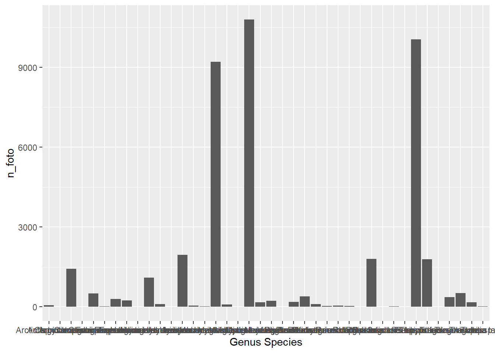
Iya, grafiknya jelek. Nama-nama spesies pada grafik yang dihasilkan bertumpuk karena nama spesiesnya terlalu banyak. Solusinya, kita perlu merotasi nama spesies agar dapat dibaca. Selain itu, kita juga akan mengubah label sumbu X dan Y agar lebih intuitif. Perintah untuk melakukan hal-hal tersebut ada di bawah ini.
# Grafik jumlah independent event (IE)
tabel_spesies %>%
ggplot() +
geom_col(mapping=aes(x= `Genus Species`,
y= n_IE))+
ylab("Jumlah Independent Event") +
xlab("Spesies") +
theme(axis.text.x = element_text(angle = 90, #rotasi 90 derajat
vjust = 0.5,
hjust = 1))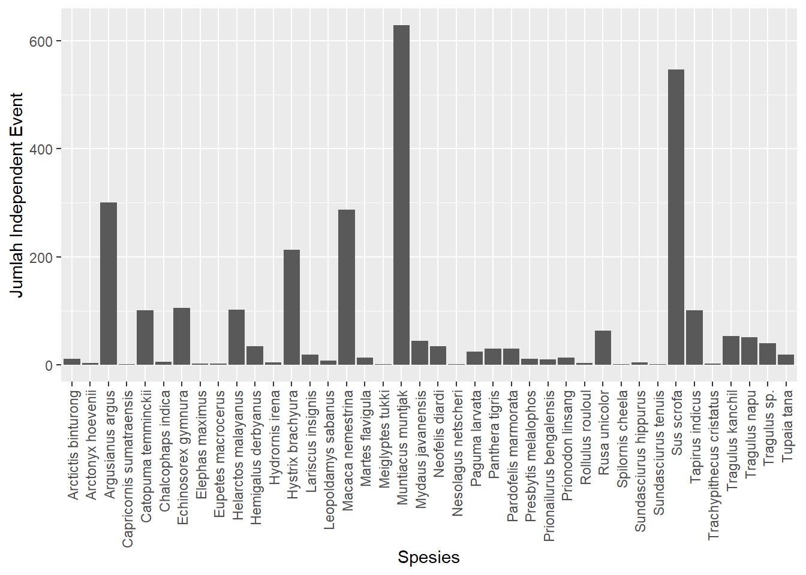
## Mengurutkan grafik batang dari spesies dengan jumlah IE tertinggi ke terendah
spesies_arr <- tabel_spesies %>% arrange(desc(n_IE))
str(spesies_arr) # tipe data `Genus Species` adalah charactertibble [40 x 3] (S3: tbl_df/tbl/data.frame)
$ Genus Species: chr [1:40] "Muntiacus muntjak" "Sus scrofa" "Argusianus argus" "Macaca nemestrina" ...
$ n_foto : int [1:40] 10791 10053 1428 9205 1956 297 1101 500 1783 1797 ...
$ n_IE : num [1:40] 628 547 300 287 213 105 102 101 101 63 ...spesies_arr$`Genus Species`<- factor(spesies_arr$`Genus Species`,
levels=spesies_arr$`Genus Species`)
str(spesies_arr)tibble [40 x 3] (S3: tbl_df/tbl/data.frame)
$ Genus Species: Factor w/ 40 levels "Muntiacus muntjak",..: 1 2 3 4 5 6 7 8 9 10 ...
$ n_foto : int [1:40] 10791 10053 1428 9205 1956 297 1101 500 1783 1797 ...
$ n_IE : num [1:40] 628 547 300 287 213 105 102 101 101 63 ...Perhatikan bahwa tipe data Genus Species berubah menjadi Factor dengan urutan dari spesies dengan jumlah IE tertinggi ke terendah.
# Membuat plot
spesies_arr %>%
ggplot() +
geom_col(mapping = aes(x = `Genus Species`,
y = n_IE))+
ylab("Jumlah Independent Event") +
xlab("Spesies") +
theme(axis.text.x = element_text(angle = 90,
vjust = 0.5,
hjust = 1))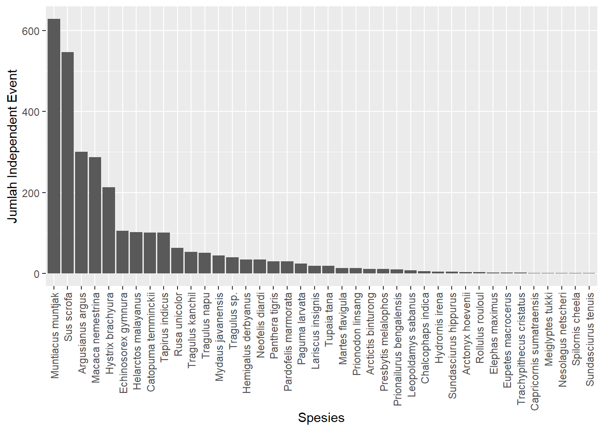
# Memplotkan beberapa spesies saja
tabel_spesies %>%
subset(`Genus Species`%in%c("Panthera tigris",
"Muntiacus muntjak",
"Rusa unicolor",
"Sus scrofa",
"Macaca nemestrina",
"Argusianus argus",
"Tapirus indicus")) %>%
ggplot() +
geom_col(mapping=aes(x= `Genus Species`,
y= n_IE))+
ylab("Jumlah Independent Event") +
xlab("Spesies") +
theme(axis.text.x = element_text(angle = 90,
vjust = 0.5,
hjust = 1))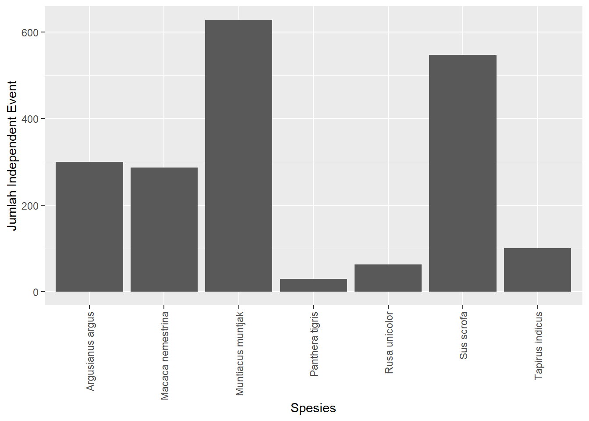
# Misalnya, kita ingin men-subset Argusianus argus
tabel_spesies %>%
subset(`Genus Species` == "Argusianus argus") # atau pakai perintah filter(...)# A tibble: 1 x 3
`Genus Species` n_foto n_IE
<chr> <int> <dbl>
1 Argusianus argus 1428 300Untuk mendapatkan daftar nama lokasi tempat spesies X ditemukan:
lokasispesiesX <- ct2019_t %>%
subset(`Genus Species` == "Argusianus argus", select = `Location ID`) %>%
distinct()
lokasispesiesX# A tibble: 35 x 1
`Location ID`
<chr>
1 IDN-108-L0001
2 IDN-108-L0002
3 IDN-108-L0003
4 IDN-108-L0006
5 IDN-108-L0007
6 IDN-108-L0009
7 IDN-108-L0010
8 IDN-108-L0011
9 IDN-108-L0012
10 IDN-108-L0013
# ... with 25 more rowsa. Membuat peta sederhana keberadaan spesies X menggunakan scatter plot
# Panggil data yang berisi koordinat kamera
koord <- read_excel("Camera trap mock data.xlsx",
sheet="Deployment") %>%
#dplyr::select(`Location ID`, X=X, Y=Y) %>%
distinct()
lokasispesiesX <- lokasispesiesX %>% left_join(koord)
# data frame ini bisa diekspor ke .csv untuk dipetakan menggunakan software GIS
write.csv(lokasispesiesX, "lokasispesiesX.csv")
lokasispesiesX %>%
ggplot(aes(x = X, y = Y)) +
geom_point()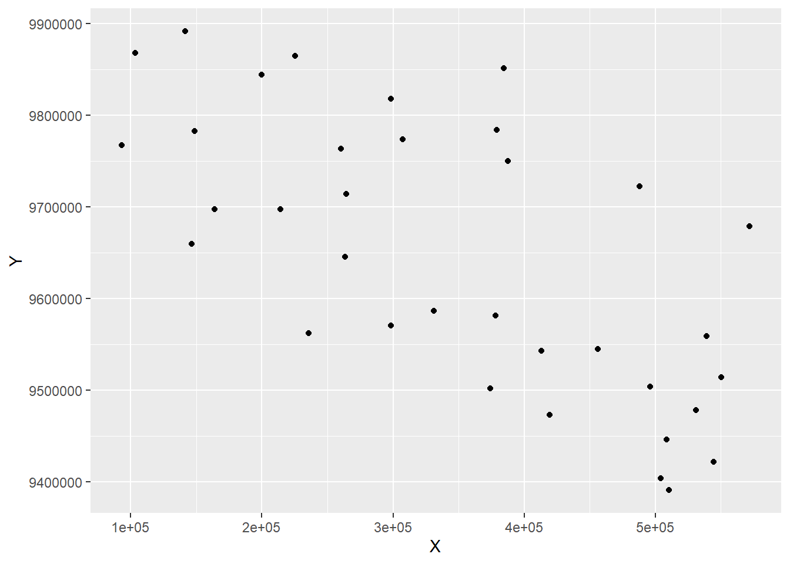
b. Membuat peta keberadaan spesies X menggunakan shapefile
Untuk menambahkan batas area studi, kita perlu memanggil data shapefile area studi menggunakan package rgdal dan sp. Package rgdal berfungsi untuk membaca data spasial, sedangkan package sp berfungsi untuk mendefinisikan tipe objek (class) data spasial yang dibuka di R serta metode pengolahannya. Install package tersebut lebih dahulu dengan klik Packages >> Install >> ketik rgdal, sp >> Install atau dengan perintah install.packages(c("rgdal","sp")).
library(rgdal)
sumatra <- readOGR("E:/Spatial Data/IDN_adm/Sumatra_main-island_utm.shp")
lokasispesies_shp <- SpatialPoints(coords=lokasispesiesX[,c("X","Y")],
proj4string = CRS("+proj=utm +zone=48 +south +datum=WGS84 +units=m +no_defs"))par(mar=c(1,1,1,1)) #mengatur margin peta agar tidak terlalu lebar
plot(lokasispesies_shp, pch=16);plot(sumatra, add=TRUE)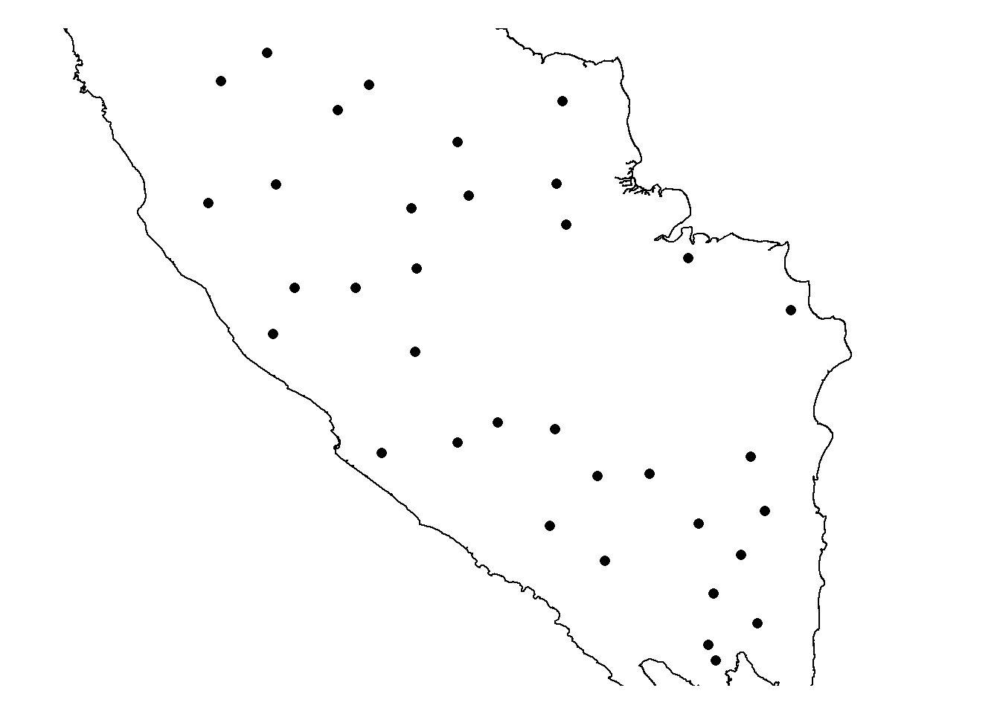
c. Memetakan jumlah independent event spesies X
spesies_ie <- ct2019_t %>%
filter(`Genus Species` == "Argusianus argus", `Independent Event` == 1) %>%
# hanya pilih IE-nya saja
left_join(koord)
spesies_ie %>%
ggplot(aes(X, Y)) +
geom_count(show.legend=TRUE) +
labs(title="Argusianus argus",
size="Jumlah IE")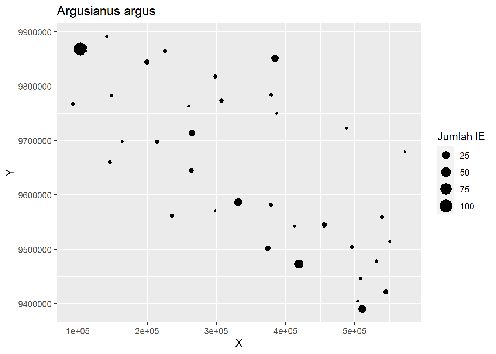
Walaupun menghitung independent event dapat mengurangi bias akibat deteksi satwa yang sama lebih dari satu kali, independent event belum memperhitungkan upaya survei (survey effort). Misalnya, terdapat dua lokasi pemasangan kamera, lokasi A dan lokasi M. Kamera aktif selama 20 hari di lokasi A, sedangkan hanya dua hari di lokasi M karena kabel kamera digigit tikus. Di kedua lokasi, terdapat dua independent event (IE) tikus bulan. Jika kita hanya membandingkan jumlah IE, kita akan mendapatkan kesimpulan yang salah tentang tikus bulan. Di lokasi A, dibutuhkan waktu 20 hari untuk mendapatkan 2 IE. Di lokasi M, hanya dibutuhkan 2 hari untuk mendapatkan 2 IE. Jika kamera tidak dirusak tikus, mungkin saja dapat terekam > 2 IE di lokasi M jika kamera aktif selama 20 hari. Oleh karena itu, jika kita ingin membandingkan temuan antarlokasi, lebih baik menggunakan metrik laju temuan (capture rate), yaitu jumlah temuan per satuan upaya survei.
Dalam studi camera trap, upaya survei seringkali disebut sebagai trap nights atau jumlah hari aktif kamera. Trap nights dapat dihitung dengan mengurangi tanggal kamera terakhir aktif dan tanggal kamera mulai aktif. Tanggal kamera terakhir aktif idealnya adalah tanggal kamera diambil, tetapi seringkali kamera sudah tidak aktif (daya baterai habis atau error) sebelum diambil sehingga lebih baik menggunakan tanggal terakhir kali kamera merekam foto/video. Untuk menghitung trap nights, kita akan menggunakan sheet Deployment.
# Memanggil data
deploy <- read_excel("Camera trap mock data.xlsx",
sheet="Deployment") %>%
subset(`Camera Failure Details`=="Functioning") %>% #kamera yang berfungsi saja
mutate(tnight=as.vector(difftime(`Camera last picture date`,
`Camera Deployment Begin Date`,
units="days")))
# difftime: untuk menghitung perbedaan waktu. Tipe output: 'difftime'
# as.vector: untuk mengubah tipe objek 'difftime' jadi 'numeric'
# Hal ini perlu dilakukan karena keluaran difftime memiliki satuan 'days'
# yang akan mengganggu perhitungan RAI.Survei camera trap untuk memantau populasi harimau biasanya menggunakan dua kamera yang saling berhadapan sehingga di data frame sebelumnya, terdapat dua nilai trap nights untuk satu lokasi kamera. Satu lokasi dianggap masih “aktif” jika terdapat setidaknya satu kamera yang aktif. Contoh: kamera A dan kamera B merupakan kamera yang berhadapan di lokasi yang sama. Kamera A aktif selama 30 hari, sedangkan kamera B mati di tengah survei sehingga hanya aktif selama 10 hari. Jumlah trap nights pada lokasi tersebut adalah 30 hari, yaitu nilai maksimal antara kamera A dan kamera B. Oleh karena itu, untuk menghitung trap nights per lokasi:
tn_loc <- deploy %>%
group_by(`Location ID`) %>%
summarise(tn_grid = max(tnight))
# Untuk menghitung total trap nights seluruh survei:
totaltn <- sum(tn_loc$tn_grid)Indeks laju temuan yang sering digunakan untuk studi camera trap adalah Relative Abundance Index (RAI) yang dipopulerkan oleh O’Brien et al. (2003). RAI terdiri dari dua macam, yaitu:
RAI1: jumlah hari yang dibutuhkan untuk mendapat satu temuan, dihitung dengan rumus \[\frac{\sum trap \text{ }nights}{\sum IE}\]
RAI2: kebalikan dari RAI1, yaitu jumlah temuan yang didapatkan per hari, dihitung dengan rumus \[\frac{\sum IE}{\sum trap \text{ }nights}\] Biasanya RAI2 dihitung dalam satuan jumlah temuan per 100 trap nights karena sebagian besar satwa jarang terekam sehingga rumusnya menjadi jumlah \[\frac{\sum IE}{\sum trap \text{ }nights/100}\]
Walaupun indeks ini dinamakan kepadatan relatif, sebenarnya indeks ini lebih merepresentasikan capture rate dibandingkan kepadatan relatif. Asumsi awalnya adalah RAI2 akan meningkat jika kepadatan spesies meningkat (semakin banyak satwa, semakin besar kemungkinan satwa tersebut terdeteksi). Namun, asumsi ini masih diragukan. Misalnya, suatu kamera dapat merekam ratusan independent events kuau raja jika berada dekat dengan dancing ground. Hal ini bukan berarti RAI tidak berguna, melainkan lebih baik memperlakukan RAI sebagai indeks capture rate daripada menganggapnya sebagai representasi kepadatan relatif.
Untuk selanjutnya, kita akan menyebut RAI2 sebagai RAI saja. Untuk menghitung RAI per spesies untuk keseluruhan survei, jumlah independent event setiap spesies dibagi dengan total trap nights per 100.
# Menghitung RAI
tabel_spesies <- tabel_spesies %>%
mutate(RAI = n_IE/(totaltn/100)) #rumus RAI
tabel_spesies# A tibble: 40 x 4
`Genus Species` n_foto n_IE RAI
<chr> <int> <dbl> <dbl>
1 Arctictis binturong 54 11 0.120
2 Arctonyx hoevenii 6 3 0.0329
3 Argusianus argus 1428 300 3.29
4 Capricornis sumatraensis 5 1 0.0110
5 Catopuma temminckii 500 101 1.11
6 Chalcophaps indica 15 6 0.0657
7 Echinosorex gymnura 297 105 1.15
8 Elephas maximus 238 2 0.0219
9 Eupetes macrocerus 2 2 0.0219
10 Helarctos malayanus 1101 102 1.12
# ... with 30 more rowsUntuk menghitung RAI per spesies per lokasi, kita perlu melakukan beberapa langkah, yaitu:
species_loc yang terdiri dari kolom spesies, ID lokasi, dan jumlah IEspecies_loc dengan tn_locspecies_RAI <- ct2019_t %>%
subset(`Photo Type` == "Animal") %>%
group_by(`Genus Species`, `Location ID`) %>%
summarise(n_IE = sum(`Independent Event`, na.rm=T)) %>%
left_join(tn_loc) %>%
mutate(RAI = n_IE/(tn_grid/100))Karena RAI dihitung untuk setiap lokasi, kita dapat menghitung ukuran keterpusatan (rata-rata atau median) dan ukuran keragaman (simpangan baku atau kuartil) RAI setiap spesies. Kita juga dapat menggunakan uji statistik untuk melihat apakah ada perbedaan signifikan RAI antara dua atau lebih spesies.
ggplot(species_RAI, aes(`Genus Species`, RAI)) +
geom_boxplot() +
labs(x="Spesies", y="RAI")+
theme(axis.text.x = element_text(angle = 90,
vjust = 0.5,
hjust = 1))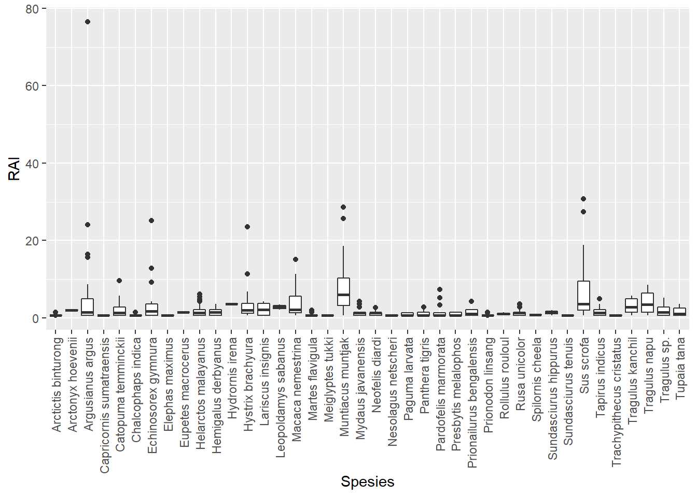
# Boxplotnya padat karena spesiesnya kebanyakan.
# Pilih beberapa spesies saja:
species_RAI %>%
subset(`Genus Species` %in% c("Helarctos malayanus","Tapirus indicus",
"Muntiacus muntjak","Rusa unicolor")) %>%
ggplot(aes(`Genus Species`, RAI)) +
geom_boxplot() +
labs(x="Spesies", y="RAI")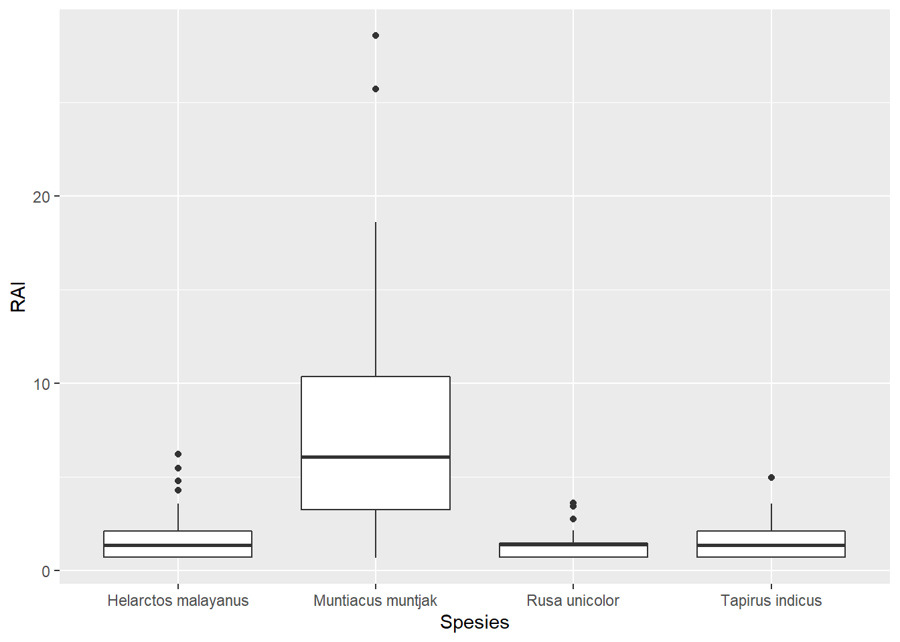
species_RAI %>%
group_by(`Genus Species`) %>%
summarise(n = n(),
rerata = mean(RAI),
simpanganbaku = sd(RAI),
median = median(RAI),
kuartil_bawah = quantile(RAI, probs=0.25),
kuartil_atas = quantile(RAI, probs=0.75),
hamparan = IQR(RAI)) # hamparan = interquartile range = Q3 - Q1# A tibble: 40 x 8
`Genus Species` n rerata simpanganbaku median kuartil_bawah kuartil_atas
<chr> <int> <dbl> <dbl> <dbl> <dbl> <dbl>
1 Arctictis bint~ 9 0.867 0.319 0.714 0.709 0.719
2 Arctonyx hoeve~ 1 2.05 NA 2.05 2.05 2.05
3 Argusianus arg~ 35 6.08 13.5 1.43 0.719 4.91
4 Capricornis su~ 1 0.685 NA 0.685 0.685 0.685
5 Catopuma temmi~ 33 2.13 1.96 1.37 0.709 2.78
6 Chalcophaps in~ 5 0.853 0.316 0.709 0.709 0.719
7 Echinosorex gy~ 18 4.08 6.19 1.74 0.716 3.57
8 Elephas maximus 2 0.674 0.0160 0.674 0.668 0.679
9 Eupetes macroc~ 1 1.43 NA 1.43 1.43 1.43
10 Helarctos mala~ 42 1.70 1.42 1.35 0.714 2.11
# ... with 30 more rows, and 1 more variable: hamparan <dbl>Ada dua cara memetakan nilai RAI, yaitu menggunakan scatter plot (tetapi tidak bisa menambahkan batas kawasan) dan menggunakan package pengolahan data spasial.
# Data koordinat
ct_coordinates <- deploy %>%
select(`Location ID`, X, Y) %>%
distinct()
# Menggabungkan data spesies dan koordinat
species_xy <- species_RAI %>% left_join(ct_coordinates)a. Menggunakan scatter plot
# Membuat plot RAI beruang madu
species_xy %>%
filter(`Genus Species`=="Helarctos malayanus") %>%
ggplot(aes(x=X, y=Y, size=RAI)) +
geom_point()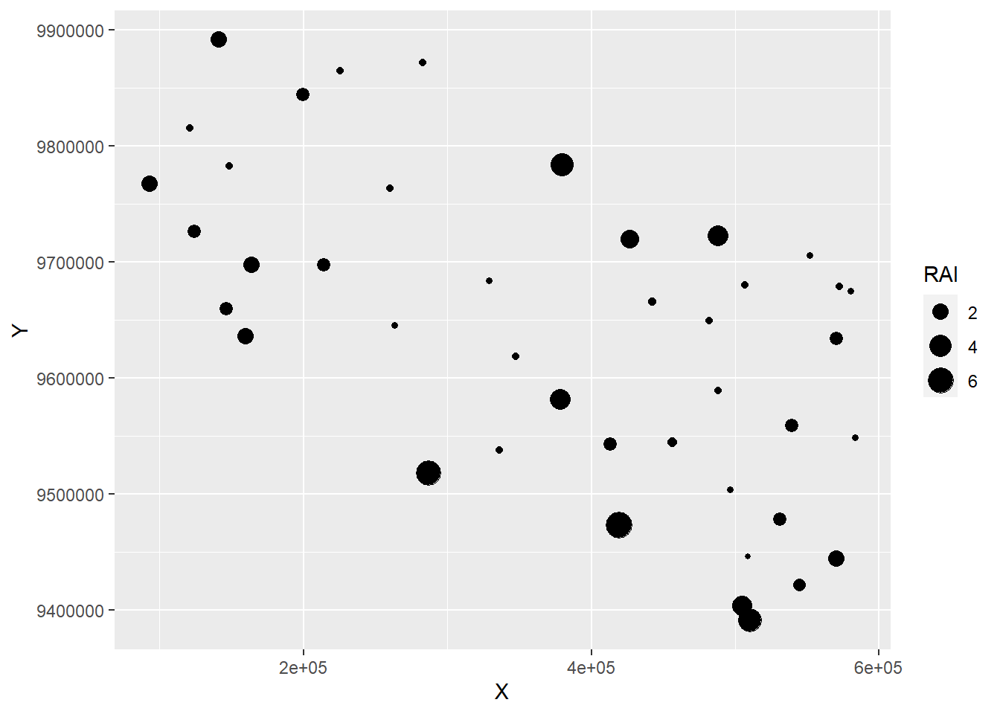
b. Menggunakan data spasial
library(rgdal);library(sp)
beruang <- species_xy %>% filter(`Genus Species`=="Helarctos malayanus")
beruang_shp <- SpatialPoints(coords=beruang[,c("X","Y")],
proj4string = CRS("+proj=utm +zone=48 +south +datum=WGS84 +units=m +no_defs"))
# Batas kawasan
sumatra <- readOGR("E:/Spatial Data/IDN_adm/Sumatra_main-island_utm.shp")# Membuat plot RAI beruang madu
par(mar=c(1,1,1,1))
plot(beruang_shp, pch=16, cex=sqrt(beruang$RAI))
plot(sumatra, add=TRUE)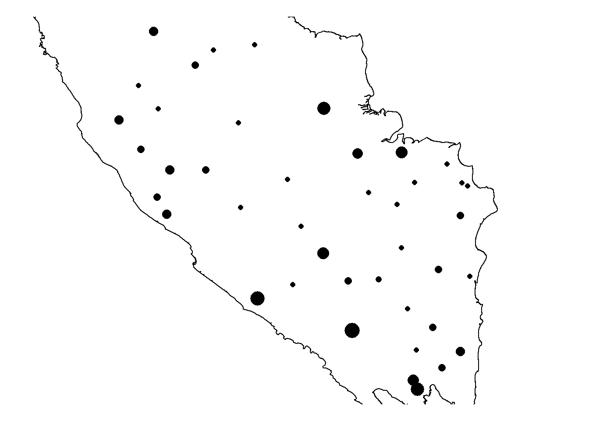
Misalnya, kita ingin mengetahui apakah ada perbedaan signifikan antara RAI kijang (Muntiacus muntjak) dan rusa sambar (Rusa unicolor). Pada box plot sebelumnya, secara visual RAI spesies tampak memiliki distribusi nonnormal. Hal ini akan kita uji menggunakan uji normalitas Shapiro-Wilk. Jika distribusi data normal, kita akan menggunakan uji parametrik t-test dengan perintah t.test(...). Jika distribusi data nonnormal, uji yang digunakan adalah uji nonparametrik Wilcoxon rank sum test dengan perintah wilcox.test(...).
# Subset data
kijang <- species_RAI$RAI[species_RAI$`Genus Species`=="Muntiacus muntjak"]
rusa <- species_RAI$RAI[species_RAI$`Genus Species`=="Rusa unicolor"]
# Uji normalitas
shapiro.test(kijang) # p-value < 0.05, distribusi data tidak normal
Shapiro-Wilk normality test
data: kijang
W = 0.86553, p-value = 9.035e-06shapiro.test(rusa) # p-value < 0.05, distribusi data tidak normal
Shapiro-Wilk normality test
data: rusa
W = 0.81845, p-value = 0.0001156# Uji Wilcoxon (karena distribusi data tidak normal)
wilcox.test(kijang, rusa)
Wilcoxon rank sum test with continuity correction
data: kijang and rusa
W = 1699, p-value = 1.215e-10
alternative hypothesis: true location shift is not equal to 0Karena p-value < 0.05, H0 ditolak sehingga kesimpulannya adalah terdapat perbedaan signifikan RAI kijang dan rusa.
Untuk menghitung tumpang-tindih pola aktivitas antara dua spesies, kita menggunakan package overlap. Tutorial lengkap mengenai package ini dapat dilihat di tautan berikut. Indeks tumpang-tindih temporal berkisar antara 0 (tidak ada tumpang-tindih) hingga 1 (tumpang-tindih sempurna). Biasanya, indeks ini digunakan untuk membandingkan pola aktivitas temporal antara predator-mangsa atau sesama kompetitor.
Pasang terlebih dahulu package overlap dengan perintah install.packages("overlap"). Data yang digunakan untuk menghitung tumpang-tindih temporal adalah jam rekaman spesies dalam skala 0 (pukul 00.00) hingga 1 (pukul 23.59), yaitu kolom “Time” pada spreadsheet Image, tetapi hanya rekaman independen yang akan digunakan. Variabel waktu ini kemudian akan kita konversi ke dalam skala radian dengan cara = \(waktu \times 2 \times\pi\). Perintah overlapEst akan mengestimasi indeks tumpang-tindih. Confidence interval estimasi dihitung dengan metode bootstraping menggunakan perintah bootEst.
library(overlap)
## 1. Memfilter independent events
IE <- subset(ct2019_t, `Independent Event`==1 & `Photo Type`=="Animal")
## 2. Konversi Time ke radian
timerad <- IE$Time*2*pi
## 3. Subset Time spesies yang akan dihitung tumpang-tindihnya
# Misalnya, harimau dan kijang
sp_a <- timerad[IE$`Genus Species`=="Panthera tigris"]
sp_b <- timerad[IE$`Genus Species`=="Muntiacus muntjak"]
## 4. Mengestimasi indeks tumpang-tindih
(ovrlp <- overlapEst(sp_a, sp_b) ) Dhat1 Dhat4 Dhat5
0.7679167 0.7661066 0.7707006 ## 5. Kalkulasi confidence interval
# Untuk latihan ini, gunakan 1000 resample supaya hasil keluar cepat.
# Untuk analisis sesungguhnya, gunakan setidaknya 10.000.
bs_a <- resample(sp_a, 1000)
bs_b <- resample(sp_b, 1000)
length(sp_a);length(sp_b)[1] 30[1] 628# Jika jumlah IE setiap spesies > 75, gunakan "Dhat4". Jika tidak, "Dhat1"
bsOut <- bootEst(bs_a, bs_b, type="Dhat1")
bsMean <- mean(bsOut)
# Confidence interval:
bootCI(ovrlp["Dhat1"], bsOut)['basic0', ] lower upper
0.6373422 0.8723872 ## 6. Membuat plot tumpang-tindih
overlapPlot(sp_a, sp_b, main="Tumpang-Tindih Pola Aktivitas")
legend('topright', c("Harimau", "Kijang"), lty=c(1,2), col=c(1,4), bty='n')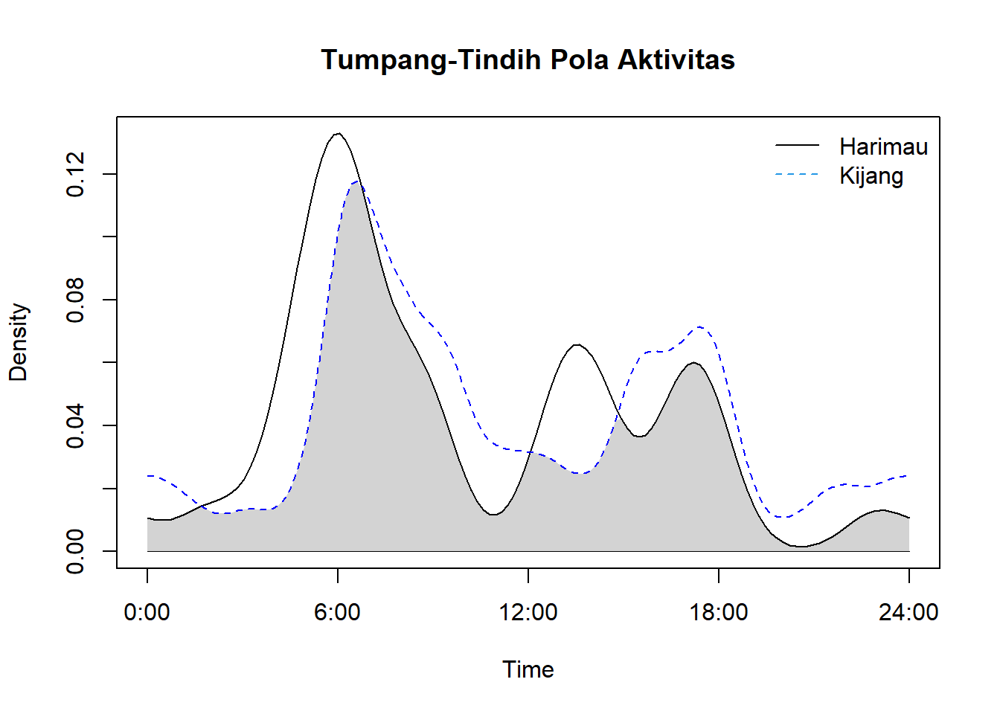
# Untuk mengubah label sumbu x dan y, tampilan garis, dan menambah rug
overlapPlot(sp_a, sp_b, main="Tumpang-Tindih Pola Aktivitas",
xlab="Waktu", # label sumbu x
ylab="Densitas Kernel", # label sumbu y
linetype = c(1,1), # jenis garis
linewidth = c(2,2), # tebal garis
linecol=c("#619CFF","#F8766D"), # warna garis
olapcol = "lavenderblush", # warna area tumpang-tindih
rug = TRUE) # menambah rug
legend('topright', c("Harimau", "Kijang"),
lty=c(1,1), # jenis garis
col=c("#619CFF","#F8766D"), # warna garis
lwd=c(2,2), # tebal garis
bty='n')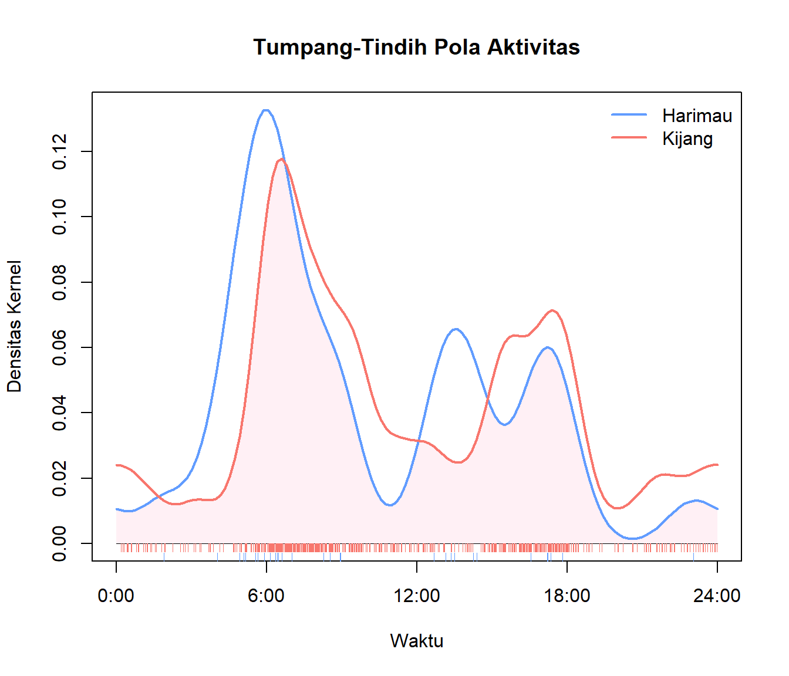